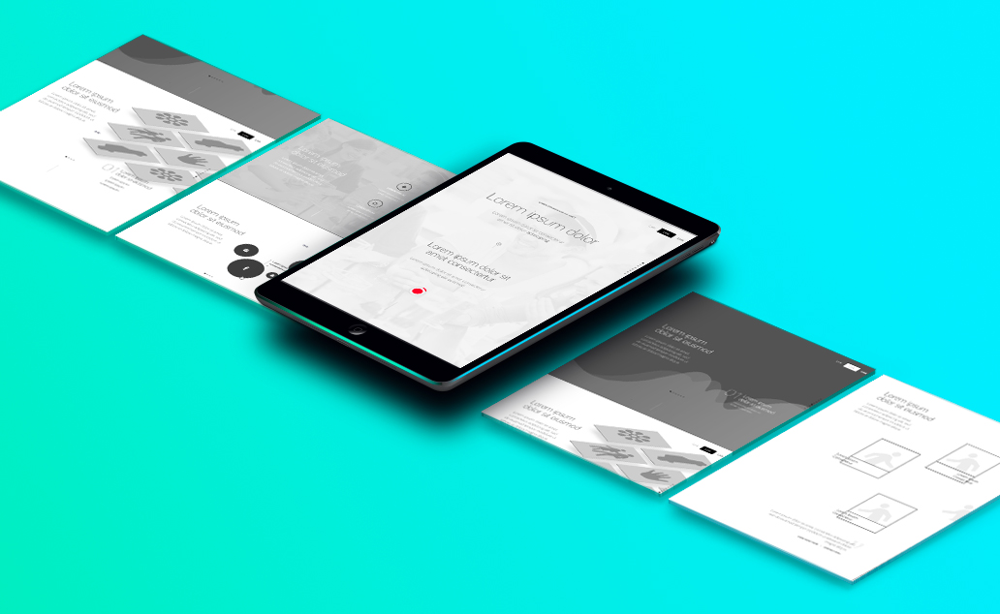

Needless to say, blending a terrific user experience with compelling visual design makes for a delicious website recipe. When the user experience is thought through and done well, it’s invisible. But when it’s done poorly, it can result in disgruntled customers, loss of revenue, and the occasional newspaper headline.
{kind=link}
You can have the most stylish web product around (be it a website or a mobile application), but those visuals remain limited if your customers can’t figure out how they’re supposed to engage with it. The reality is that your visitors shouldn’t have to think about how to use your website. That’s your UX designer’s responsibility. And believe us when we say that a lot of research, thought and planning goes into ensuring that your users have to think as little as possible and are instead guided effortlessly throughout each and every page.
User Experience is Strategy
User Experience is the foundation of any user-centric design, but it’s particularly important for complex or wide-ranging websites that pull together a range of different information and/or features.
Complex or advanced websites including social media websites, eCommerce sites and business grade websites are all excellent examples of web products that require UX strategy as a foundation.
{kind=link}
From the customer side of things, a well-architected website will encourage longer visits, deepen engagement and have a direct impact of conversion metrics. From the business side such action increases conversion and impacts your company’s top line. It’ll also reduce maintenance and support needs, as well as time and costs involved with administrative work, future development and/or expansion.
User Profiles
It sounds obvious, but good user experience is all about the user. And in order to design effectively for your customers, it’s essential to understand who they are and how they want to interact with your web product. This is where the concept of user profiles comes in handy. Developed through data-gathering processes and customer analysis, user profiles are used to represent the different types of user groups that your business caters to. By understanding demographic factors including backgrounds, habits, attributes and needs of these user groups, it’s possible to develop a relevant, highly targeted UX framework designed specifically with these user groups in mind.
User Flows
With a user profile in hand, it’s possible not only to understand who your customers are, but how they’re likely to engage with your web product. User flows are where you start to consider how your specific customers will want to move through your website pages. Business objectives will play a vital factor in determining how you want each user group to interact and ultimately where you want each group to end up. What specific actions you want completed for each page must be considered and the ideal flow for each page is also outlined. If this sounds like quite a bit of research and planning required by an expert – it’s because it is!
{kind=link}
Keep in mind that there’s no requirement that you start at the beginning and work through to the end in linear fashion. Some users may arrive on your homepage and work their way through sequentially until they land on a specific call to action such as a “buy” button, trial of a demo, or “contact” page. Others may arrive on your newsletter sign-up page via a social media link. Others again may begin with your blog, having arrived there via a google search.
These different patterns of engaging with a website are known as user flows. By identifying the typical narratives your visitors follow when engaging with your web product, you can ensure that your individual page design provides a flow that not only makes sense but accommodates your specific users.
With this carefully developed understanding of user personas and user flows, the individual website page structuring process can begin.
The Schematics
Now that we’ve organized our site’s information at a structural level, it’s time to begin planning how the site will communicate key information and goals at the page level. The schematic or page blueprint is a visual guide that must consider hierarchy of information, the arrangement of design elements, functionality and the seamless flow from user behavior to call to action.
Wire-frames may not look very impressive as they are often stripped away of any design detail to ensure a focus on usability, navigability and coherence. The goal is to create a simple, intuitive experience for your identified users. Through the wire-framing process, UX designers can ensure that each page, and each element on the page, serves purpose and communicates the information a user needs in a logical, natural manner.
While there are many tools in a UX Designer’s tool box, the above are a few of the essentials worth highlighting. Great user experience design comes from a customer-first perspective and a deep understanding of that customer. By ensuring we know who we’re designing for, and for what purpose, it’s possible to develop a website or mobile app that’s seamless, effective, and drives results.
Of course, creating that simplicity isn’t quick or easy, but the result is a web product built not on assumptions or gut feeling, but on precise information and a deep understanding of the brand and objectives. This holistic and wholly necessary approach provides far superior outcomes.